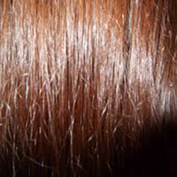
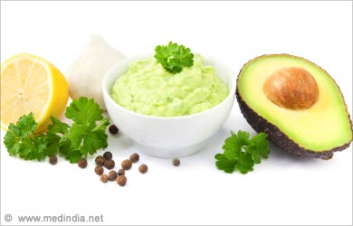
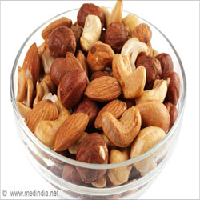

Hair split ends

Tips
1. Trim the ends regularly. You tend to get split ends if you don’t trim your hair for a long time
2. Massaging your scalp with warm olive oil, almond oil, coconut oil or a combination of these three is very good for your hair. Oil massage is one of the best home remedies to keep your hair moisturized, reduce hair fall and be free from split ends. After massaging your hair, leave it overnight or for an hour, and then wash with a mild shampoo.
3. Take 1 tablespoon of almond oil with 1 egg yolk and1 teaspoon of honey. Mix all these ingredients and massage in your hair gently and cover with a shower cap. Leave for half an hour and wash with mild shampoo.
4. Papaya is a rich source of protein, which is important for the hair to maintain its shine, moisture and growth. Take 2 slices of papaya, mash or blend it till it becomes a paste. Mix the paste with 2 tablespoon of yogurt and apply on your hair. Cover your hair with a shower cap and leave for 30 minutes. Use mild shampoo to wash your hair.
5. Mix equal amount of castor oil, mustard oil and olive oil and apply the mixed oil into your hair while massaging the scalp also. Then wrap your hair with a hot towel for 30 minutes and shampoo your hair.
6. Take a tablespoon of heavy cream and half a cup of milk and mix it thoroughly. Massage it into the hair, especially the ends, leave it for 15 minutes and rinse it out. The fats and proteins in milk are best known remedies for split ends.

7. Avocado is good for the hair. It makes the hair shiny and soft. Take an avocado and mash it well, then apply the mashed avocado on the hair and mainly on the split ends. Leave it for 30 minutes and wash it off.
8. Chamomile tea has calming properties that works great for hair split ends. Prepare a pot of chamomile tea and give your hair a pre-rinse, then leave for a while before your hair wash.

9. Foods with healthy fat such as almonds, cashews, chia seed, hemp seeds and avocado will keep your hair moisturized, prevent wear and tear and split ends. Include enough healthy fats in your daily diet for a healthy hair.
10. Mix 1 teaspoon of castor oil and 1 teaspoon of honey together. Apply well to the ends of hair and wash after half an hour.